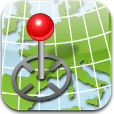

nswtopo
vector topo maps for NSW and Tasmania
nswtopo is open-source software for creating detailed topographic maps of New South Wales and Tasmania. Maps can be made in both vector and raster formats.
 Get the Code
Get the Code
Code for nswtopo is available on GitHub.
Make maps of any areas you want using the lastest government topographic data. Add extra layers such as shaded relief, grid lines and your own GPS data.
Maps for Mobile
Messing with software isn't for everyone. If you just need some quick topos for your phone or tablet, nswtopo has you covered.
First, grab the free Avenza PDF Maps app for your iOS or Android device.
Then use this site to find the maps you need. Click or tap the maps to purchase them from the App Store or Google Play. Download the maps to your device and you're good to go.
Maps for NSW cover the eastern half of the state at scales of 1:25 000 and 1:50 000. Tasmanian maps cover the whole state at a scale of 1:25 000. The map sets correspond to the official LPI and TASMAP series.